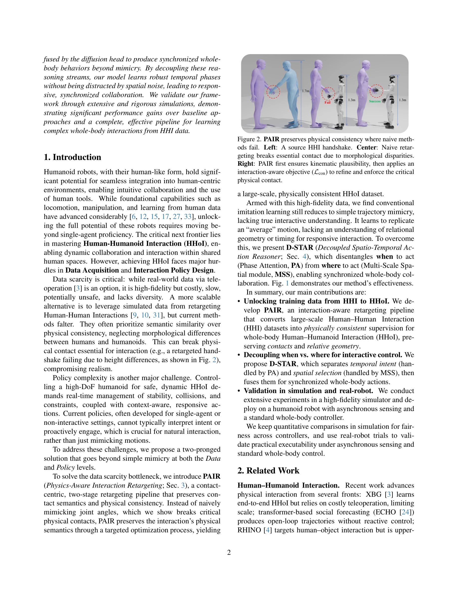
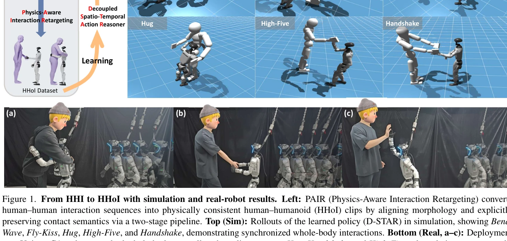
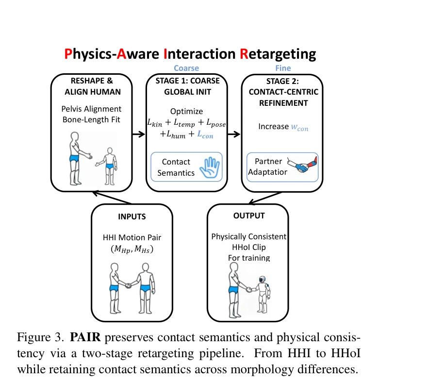

저자: Wei-Jin Huang, Yue-Yi Zhang, Yi-Lin Wei, Zhi-Wei Xia, Juantao Tan, Yuan-Ming Li, Zhilin Zhao, Wei-Shi Zheng | 날짜: 2026-01-14 | DOI: 10.48550/arXiv.2601.09518

Figure 2. PAIR preserves physical consistency where naive meth-
휴먼-휴먼 인터랙션(HHI) 데이터를 물리적 일관성을 보존하면서 휴먼-휴모이드 인터랙션(HHoI)으로 변환하는 PAIR와, 시간적 의도와 공간적 선택을 분리하여 상호작용적 이해를 갖춘 D-STAR 정책을 제안한다.

Figure 1. From HHI to HHoI with simulation and real-robot results. Left: PAIR (Physics-Aware Interaction Retargeting) co

Figure 3. PAIR preserves contact semantics and physical consis-
총평: 이 논문은 HHI에서 HHoI로의 데이터 변환 문제를 물리적 일관성 관점에서 체계적으로 해결하고, 시공간 분리를 통해 상호작용 정책의 반응성을 크게 향상시키는 혁신적인 접근을 제시한다. 시뮬레이션과 실제 로봇 검증을 통해 실용성을 입증하였으나, 더 다양한 상호작용 시나리오와 플랫폼으로의 확장이 필요하다.